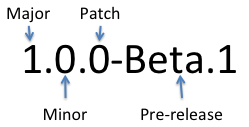

Presentacio Manuel Blanch Garzon
Pagina inicial presentació
Index
Pagines incloses
- Composer
- Empaquetament
- Git
- HTTP, Rest, Ajax
- Empaquetament amb Javascript
- Semantic Versioning
- Test Development Driven
- Continuous Integrations
- Github Pages
- Api Docs Generators
- PHP Debug amb Xdebug i Code Coverag
Que es composer
Composer és un gestor de dependències, no un gestor de paquets.
Tracta amb paquets i llibreries, la instal·lació sempre és local per a qualsevol projecte, les llibreries s'instal·len en un directori per defecte (normalment és / vendor).

Que es empaquetar
L'empaquetat d'aplicacions consisteix a proporcionar les aplicacions en forma de paquets.
Aquests paquets estan formats pels programes executables de l'aplicació, així com per totes les biblioteques de les quals depèn i altres tipus de fitxers (imatges, fitxers d'àudio, traduccions i localitzacions, etc.),
de manera que es proporcionen com un conjunt.

Que es github
GitHub és una plataforma de desenvolupament col·laboratiu de programari per allotjar projectes utilitzant el sistema de control de versions Git.
El codi s'emmagatzema de forma pública o privada.
Codi repositori


Que es AJAX
AJAX és una tècnica de desenvolupament web per crear aplicacions interactives.
Aquestes aplicacions s'executen en el client, és a dir, en el navegador dels usuaris mentre es manté la comunicació asíncrona amb el servidor en segon pla.
Ens sera possible realitzar canvis sobre les pàgines sense necessitat de recarregar-les.
Codi AJAX

Que es empaquetament amb javascript
NPM (node package manager) és un gestor de paquets de NODE.JS, que ens permet descarregar llibreries i enllaçar-les o descarregar programes de JS

Que es Semantic Versioning
Semantic versioning és un estàndard que una gran quantitat de projectes d'ús per comunicar quin tipus de canvis es troben en aquesta versió.
És important comunicar quin tipus de canvis es troben en proces perquè a vegades aquests canvis trencar el codi que depèn del paquet.

Que es Test Development driven
Desenvolupament guiat per proves de programari, és una pràctica d'enginyeria de programari que involucra altres dues pràctiques: Escriure les proves primer (Test First Development) i Refactorització (Refactoring).
Per escriure les proves generalment s'utilitzen les proves unitàries. En primer lloc, s'escriu una prova i es verifica que les proves fallen.
Resultat test satisfactori


Que es Continuous integrations
La integració continua (CI) es una forma de treballar en informàtica on indica que es fan integracions continuament.
Cada cert temps ens hauriem de descarregar el codi, compilar-lo, realitzar testos i treure un informe que ens digue com anem. Valors quantitatius.
Integració vol dir el proces tipic de descarrega, execució, compilació i informe final.

Que es GithubPages
GitHub Pages és una forma d'allotjar els nostres projectes en una pàgina web, sense necessitat de tenir coneixements en servidors.
Com crear Un githubpages

Que es ApiDocsGenerator
Es un clon del Java docs, son el mateix per al php, ve del java i es tracta de una forma estandar de documentar el nostre codi.